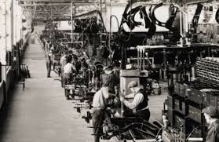
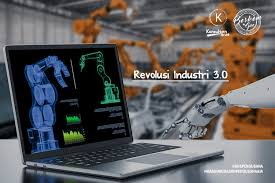
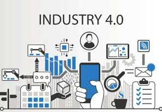

Industri 1.0
Revolusi Industri 1.0 terjadi pada abad ke-18, yang ditandai dengan penemuan mesin uap di Inggris. Saat itu, mesin uap menjadi alat tenun mekanis pertama yang digunakan oleh bangsa Inggris untuk meningkatkan produktivitas industri tekstil. Mesin tersebut menggantikan tenaga manusia, yang sebelumnya menggunakan tangan secara manual, dan kini digantikan oleh mesin uap. Seiring berjalannya waktu, mesin uap berkembang dalam berbagai industri lainnya, mulai dari pertanian, pertambangan, transportasi, hingga manufaktur, yang mulai menggantikan tenaga manual. Di era ini jugalah produksi massal terjadi.Revolusi ini berakhir pada tahun 1850-an.
Industri 2.0
Revolusi Industri pun berlanjut ke 2.0, yang terjadi pada awal abad ke-20. Revolusi ini ditandai dengan penemuan tenaga listrik. Pekerjaan yang sebelumnya dilakukan secara manual dan kemudian digantikan oleh mesin uap, kini semakin dipermudah dengan adanya tenaga listrik. Berbeda dengan Revolusi Industri 1.0, yang berfokus pada efisiensi mesin, Revolusi Industri 2.0 lebih menekankan pada peningkatan proses produksi itu sendiri.
Industri 3.0
Revolusi Industri 3.0 dimulai pada 1970-an dengan adopsi komputer dan otomatisasi dalam produksi. Peran manusia semakin berkurang, digantikan oleh mesin-mesin pintar seperti robot dan komputer. Revolusi ini dipicu oleh mesin yang dapat bergerak dan berpikir otomatis. Salah satu komputer pertama, XColossus, dikembangkan pada Perang Dunia II untuk memecahkan kode Nazi.Penggunaan komputer menggantikan tugas kompleks, seperti mengirim dokumen, mencatat data, dan mengendalikan sistem industri.
Industri 4.0
Revolusi Industri 4.0 (Four Point Zero) berfokus pada perkembangan dunia digital dan Internet of Things (IoT). Era ini menggabungkan otomatisasi dengan Teknologi Siber, yang dikenal sebagai Cyber-Physical System. Berbagai inovasi, seperti Robot berbasis Internet, Kecerdasan buatan (AI), dan Cloud Computing, telah mengubah banyak aspek kehidupan, termasuk ekonomi, dunia kerja, dan gaya hidup. Teknologi baru terus berkembang, seperti ojek online, transaksi digital, dan warung digital. Singkatnya, Revolusi Industri 4.0 menghadirkan teknologi cerdas yang terhubung dengan berbagai aspek kehidupan manusia.